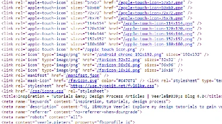
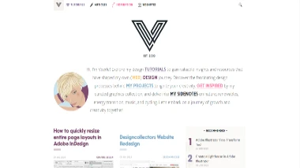
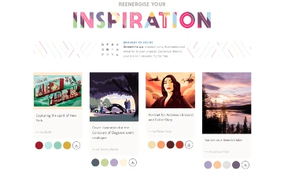

Code
The code for the website looks clean. The HTML used represents common practices that support SEO and readability. In other words, the HTML is semantic.
User Interface
The user interface is beautiful. There are many colors that are used that compliment the color theme. The design is very interactive. If some text is colored differently than it is a link.
User Experience
The user experience is good overall. I was engaged from the moment I visited the site. It tells a story while simultaneously bringing people to various call-to-actions that take users where the webmaster wants them to go. The usability is not the best. I was kind of overwhelmed when I first visited the homepage because there were so many links and sections. One thing that bothered me was the navigation on mobile. It has a scrollbar which is visually unappealing.
Summary
Veerle is a website dedicated to improving people's knowledge of web design. Its code contains semantic HTML that is easy to read. It has a smooth user interface that has few defects. And the user experience is not bad, I was mildly overwhelmed but I didn't have issues navigating to other pages on the website.